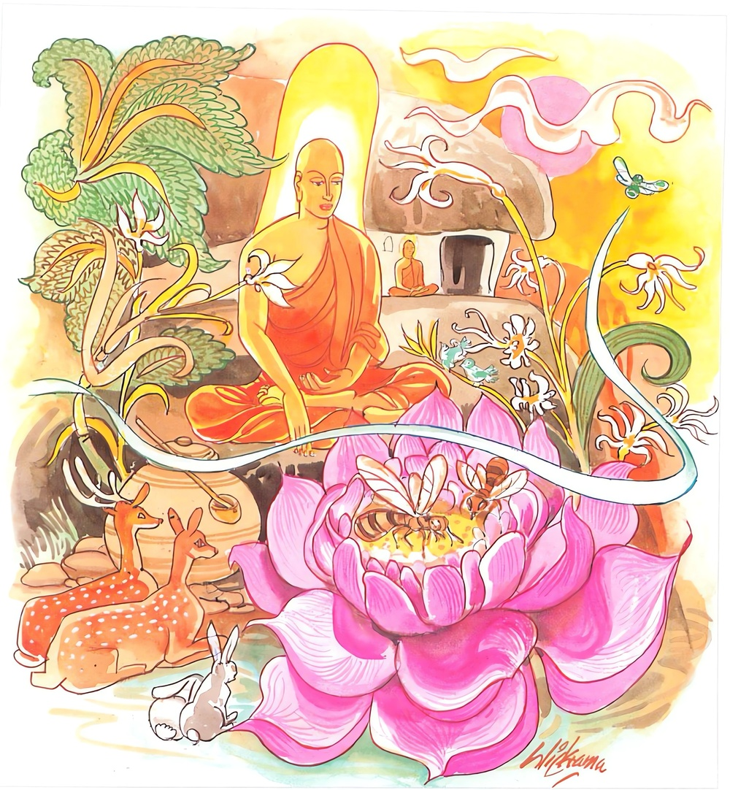

7-10 වෙසඟනක්
මෙම කතාව ධම්මපද අටුවාවෙන් ද කියවන්න.
රමණීයානි අරඤ්ඤානි යත්ථ න රමතී ජනො
වීතරාගා රමිස්සන්ති න තෙ කාමගවෙසිනො.
මහා අරණ්යයෝ රමණීය හ (සිත් අලවන්නාහ). යම් මහ අරණෙක්හි (වස්තුකාම ක්ලේශකාම සොයන සුලු) ලෞකික මහජන තෙම නො ඇලේ ද, පහ වූ රාග ඇති රහත්හු (පියුමට බට බමරුන් මෙන් ප්රීති ව) එහි ඇලෙන්නාහු ය. කුමක් හෙයින්? යත්: ඒ රහත්හු වස්තුකාම ක්ලේශකාම සොයන සුල්ලෝ නො වෙත්. එහෙයිනි.

අප බුදුරජුන් දවස පිඬු සිඟා වැළඳීමෙන් දිවි ගලවන එක් මහණෙක් බුදුරජුන් වෙතින් කමටහන් ගෙණ පැරණි උයනකට වැදී මහණදම් කරන්නේ ය. එදවස ම එනුවර විසූ වෙසඟනක් එක් පුරුෂයකුට “මම අසවල් තැනට එන්නෙමි, ඔබ එතැනට ආ යුතු ය” යි සලකුණු කියා ගියා ය. එහෙත් ඒ පුරුෂයා ඈ කියු තැනට නො ගියේ ය. වෙසඟන ඔහු එනු බලා සිට නො පැමිණි බැවින් නො ඉවසිල්ලෙන් අතන මෙතන ඇවිදින්නී භික්ෂූන් වහන්සේ කමටහන් වඩමින් හුන් උයනට වැදුනී, එහි අහරමිණිය ගොතා හුන් ඒ භික්ෂූ දුටුවා ය. දැකත් එහි ද කවරකු හෝ සොයමින් තැන තැන ඇවිදින්නී, එක්වන්නට අන් පිරිමියකු, නො ලැබ “මේ ඉන්නේ පිරිමියෙක, මුවත් රවටා ගෙණ අමාරුව පිරිමසා ගණිමි” යි සිතා උන්වහන්සේට මූණ හරවා ඇඳ සිටි රෙද්ද කිහිපවරක් ම ලිහලිහා අඳින්නටත් කෙස්ස කඩ කඩා බඳින්නටත් තවත් නොයෙක් ඉඟිබිඟි කරන්නටත් සිනාසෙන්නටත් පටන්ගත්තා ය. යෝගී භික්ෂූන් වහන්සේ ඒ දැක තැති ගත්හ. බලවත් සංවේගයට පැමිණියහ. මුළු සිරුර එය පැතිර ගියේ ය. “ප්රේතියකගේ විකාරයකැ” යි උන්වහන්සේට සිත් විය.
ඒ අතර බුදුරජානන් වහන්සේ තමන් වහන්සේ වෙතින් කමටහන් ගෙණ ගිය ඒ භික්ෂුහුන්ගේ තොරතුරු බලා වදාළ සේක. එවිට වෙසඟනක ඈ කරණ නො හොබිනා ක්රියාත් දැක භික්ෂුවට එහිලා සංවේග උපන්බව ද දැක ගඳකිළියෙහි ම වැඩහිඳ ඔහුට “මහණ! සල්ලාලයන් නො ඇලෙන තැන ම පහ කළ රාගය ඇත්තන් ඇලෙන තැන වන්නේ ය” යි වදාරා ආලෝකය පතුරුවා මේ ධර්මදේශනාව ද කළ සේක:
රමණීයානි අරඤ්ඤානි යත්ථ න රමතී මනො,
වීතරාගා රමිස්සන්ති න තෙ කාමගවෙසිනො ති.
වන පෙදෙස සිත් කලුය. කාමීජන තෙමේ යම් තැනෙක නො ඇලේ නම්, රහතුන් වහන්සේලා එ තැන ඇලෙන්නාහ. උන්වහන්සේලා කාමය සොයන්නෝ නො වෙති.
රමණීයානි අරඤ්ඤානි = වනයෝ සිත්කලු වෙති.
මනා කොට මල් පිපි සිටි ගස් වැල්වලින් ගහන වූ පහන් දියෙන් හා පියුම් උපුල් හෙල්මැලි කුමුදුමල් ආදියෙන් පිරුණු කැසුබ් ආදීන්ගෙන් ගැවසී ගත් විලින් ශෝභමාන වූ වනයෝ ම වැඩියක් සිත්කලු වෙති. සිත් ඇලෙන්නේ එබඳු තැන්හි ය. මෙහි ප්රධාන විසින් අභිමත එබඳු වනයෝ ය. ‘අරීයතෙ ගම්යතෙති = අරඤ්ඤං’ ප්රයෝජන ඇත්තන් විසින් එළඹෙනු ලැබේ නු යි අරඤ්ඤ නම්.
යත්ථ න රමතී ජනො = කාමීජන තෙමේ යම් තැනෙක නො ඇලේ ද.
මෙහි ජන නම්, වස්තුකාම ක්ලේශකාමයන් සොයන බලන එහි ගැලෙන සාමාන්යයා ය. ‘කුසලා කුසලං ජනෙතීති = ජනො’ කුසල් අකුසල් උපදවන්නේ ජන නමි. වස්තුකාම ක්ලේශ කාමයන් සපයමින් එහි බැඳී සිටින තැනැත්තේ මහත්ත්වයෙන් හීන වූයේ කිසිත් වෙසෙසුමක් නො කොට ජනැ යි දක්වන ලද්දේ ය. කාම වස්තූන්හි ගිජුව ඒ ම රැස් කරන්නේ, පුල්පියුම් ආදියෙන් ගැවසීගත් වන පෙදෙස්හි නො ඇලෙයි. පුල් පියුම් වෙනෙහි නො ඇලෙන නීලමැස්සන් සේ.
වීතරාගා රමිස්සන්ති = රහතුන් වහන්සේලා ඇලෙන්නාහ.
කාමරාග - රූපරාග - අරූපරාගයන් මුලසුන් කොට සිටියෝ වීතරාගීහු ය. රහතුන් වහන්සේ ය.
එකොළොස් අයුරකින් බෙදුනු කාම ලෝකයෙහි ඉන්ද්රියානින්ද්රියබද්ධවස්තූන් කෙරෙහි ඇල්ම, ගිජුකම, කාමරාග නම්. මෙහි ඒ ඇලුම දැඩි කල්හි රාග යි ද, දුර්වල කල්හි ඡන්ද යි ද කියත්.
“කතමෙ ධම්මා කාමාවචරා? හෙට්ඨතො අවීචිනිරයං පරියන්තං කත්වා උපරිතො පරනිම්මිතවසවත්තී දෙවෙ අනතො කරිත්වා යං එතස්මිං අන්තරෙ එත්ථාවචරා එත්ථ පරියාපන්නා ඛන්ධ ධාතු ආයතනා, ඉමෙ ධම්මා කාමාවචරා” අවීචියේ පටන් පරනිර්මිතවශවර්ති දෙවියන් තෙක් මේ අතර අවකාශයෙහි දැඩි ව හැසිරෙන ස්කන්ධ ධාතු ආයතනයෝ කාමාවචර නම් වෙති.
කාමාවචරස්කන්ධාදීන් කෙරෙහි පවත්නා කාමවස්තූන් කෙරෙහි වූ ඒ මේ ඇල්ම, ගිජුකම සංස්කාර ස්කන්ධයෙහි ඇතුළත් වේ. මනෝවිඥානයෙන් දත යුතු ය. මොහුගේ ඉපැත්මට ප්රධාන විසින් හේතු වන්නේ, ශුභනිමිත්ත හා අයෝනිසෝමනසිකාර යන මේ දෙක ය. ශුභනිමිත්ත නම් රාගයාගේ ඉපැමත්ට කරුණු වූ ඉටු අරමුණ ය. නො මගින් කරණ කල්පනාව අයෝනිසෝමනසිකාරයි.
රූපරාග නම්, රූපභවයෙහි පවත්නා ඡන්දරාගය ය. බලවත් ඇල්ම ය.
“කතමෙ ධම්මා රූපාවචරා? හෙට්ඨතො බ්රහ්මලොකං පරියන්තං කත්වා උපරිතො අකනිට්ඨෙ දෙවෙ අන්තො කරිත්වා එත්ථාවචරා එත්ථ පරියාපන්නා ඛන්ධධාතුආයතනා ඉමෙ ධම්මා රූපාවචරා” බ්රහ්මපාරිෂද්ය බ්රහ්මලෝකය පටන් අකනිටා බඹලොව තෙක් මේ අතර පවත්නා ස්කන්ධධාතුආයතනයෝ රූපාවචරයෝ ය. මෙකී රූපාවචරයන්හි පවත්නා ඇල්ම ගිජුකම රූපරාග යි ගැණේ.
ප්රථමද්ධ්යානභූමියක් වූ බ්රහ්මපාරිෂද්යයෙහි ආයුකාලය, අසඞ්ඛ්ය කල්පයෙන් තුනෙන් පංගුවක් වේ. එහි වූවෝ මහාබ්රහ්මයන්ගේ පරිචාරකයන් බැවින් බ්රහ්මපාරිසජ්ජ යි කියනු ලැබෙත්. බ්රහ්ම පුරෝහිතයෙහි ආයුකාලය, උපාර්ධකල්පයෙකි. ඔවුහු මහාබ්රහ්මයන්ගේ පුරෝහිතයන් බැවින් බ්රහ්මපුරෝහිත නම්. අසඞ්ඛ්ය කල්පයෙක්, මහාබ්රහ්මයන්ගේ ආයුකාලය යි. සහස්සබ්රහ්ම - දිසහස්සබ්රහ්ම ඈ විසින් පැහැයෙන් හා ආයුකාලයෙන් හා සැපතින් හා අන් දෙතල වැසියනට වඩා මහත් බැවින් මහාබ්රහ්ම නම්. සහස්සබ්රහ්ම යි කියන්නේ සක්වළ දහසකට අධිපති වූ බ්රහ්ම තෙමේ ය. සක්වළ දෙදහසකට අධිපති වූයේ දිසහස්ස නම්. බ්රහ්මපාරිසජ්ජයෝ හීනයහ. බ්රහ්මපුරෝහිතයෝ මද්ධ්යමයහ. මහාබ්රහ්මයෝ ශ්රේෂ්ඨයහ. මේ බඹතල තුන ප්රථමද්ධ්යානභූමි යි. මේ තුන සමතලයෙහි පිහිටියේ ය.
මද ආලෝකය ඇත්තේ පරිත්තාභ නම්. ආයුකාලය මහා කල්ප දෙකෙකි. සීමා කොට නො දැක්ක හැකි තරමට ආලෝකය ඇත්තේ අප්පමාණාභ නම්. ආයුකාලය මහාකල්ප සතරෙකි. වලාගැබකින් විදුලි කලඹක් නික්ම යන්නා සේ ඔබිනොබ විසිර යන ආලෝකය ඇත්තේ ආභස්සර නම්. ආයු මහාකල්ප අටෙකි. ශ්රේෂඨයෝ ආභස්සරයෝ ය. පරිත්තාභ - අප්පමාණාහයෝ ඔවුන්ගේ පරිචාරකයෝත් පුරෝහිතයෝත් වෙති. මෙ තුන ද්විතියද්ධ්යාන භූමි යි. සමතලයෙහි පිහිටියේ ය.
එකට හැනී සිටි ආලෝකය ඇත්තේ පරිත්තසුභ නම්. ආයු කප් සොළොසෙකි. පමණ නො කොටැකි ආලෝකය ඇත්තේ අප්පමාණසුභ නම්. මහාකප් දෙතිසෙක් ඔවුන්ගේ ආයුකාලය යි. ආලෝකයෙන් හැම අතකින් ආකීර්ණ වූයේ සුභකිණ්හ නම්. සූසැට කපෙක්, ඔවුන්ගේ ආයුකාලය යි. ශ්රේෂ්ඨයෝ. සුභකිණ්හයෝ ය. පරිත්තසුභ - අප්පමාණසුභයෝ හීන මද්ධ්යම වෙති. මෙතුන තෘතීයද්ධ්යාන භූමි යි. සමතලයෙහි පිහිටියේ ය.
මහත්ඵල ඇත්තේ වෙහප්ඵල නම්. ධ්යානබලයෙන් ලැබු මහත්ඵල ඇත්තේ ය. වෙහප්ඵල - අසඤ්ඤසත්ත දෙ තල වැස්සන්ගේ ජීවනකාලය පන්සිය කපෙකි. වේදන - සංඥා - සංස්කාර - විඥාන (නාමස්කන්ධ) නැත්තේ අසඤ්ඤසත්ත නම්. ඇත්තේ රූපස්කන්ධය පමණෙකි. මේ දෙක සමතලයෙහි පිහිටියේ ය.
සුද්ධාවාසබඹතල පසෙකි. විස්තර යට කියන ලද්දේ ය. අවිහයෙහි ජීවනකාලය කප් දහසෙකි. අතප්පයෙහි දෙදහසෙකි. සුදස්සයෙහි සාර දහසෙකි. සුදස්සියෙහි අට දහසෙකි. අකනිට්ඨයෙහි සොළොස් දහසෙකි. මේ හැම චතුර්ත්ථධ්යානභූමි යි.
මේ සොළොස් බඹතලයෙහි ආයුකාලයත් සම්පත්තියත් බලවත් බැවින් එයට අයත් ස්කන්ධාදීන් කෙරෙහි ඇති ඇල්ම බලවත් ය. එම රූපරාග නම්. මෙය ඉපැදෙනුයේ එහි ආයුසම්පත්ත්යාදිය මහත් බැවින් නිත්ය, ශුභ, සුඛ ඈ විසින් ගැණිමෙනි.
අරූපාරාග නම්, අරූප භවයෙහි පවත්නා ඡන්දරාගය යි
“කතමෙ ධම්මා අරූපාවචරා? හෙට්ඨතො ආකාසානඤ්චායතනූපගෙ දෙවෙ පරියන්තං කත්වා උපරිතො නෙවසඤ්ඤානාසඤ්ඤායතනූපගෙ දෙවෙ අන්තො කරිත්වා එත්ථාවචරා එත්ථ පරියාපන්නා ඛන්ධධාතු ආයතනා ඉමෙ ධම්මා අරූපාවචරා” ආකාසානඤ්චායතනය පටන් නෙවසඤ්ඤානාසඤ්ඤායතනය තෙක් ඇති බඹලොව සතරෙහි හැසිරෙන ස්කන්ධධාතුආයතනයෝ අරූපාවචරයෝ ය. මෙකී අරූපාවචරයන්හි පවත්නා ඇල්ම, ගිජුකම අරූපරාගය යි ගැණේ. විස්තර යට කියන ලද්දේ ය. ආකාසානඤ්චායතනුපග දෙවියන්ට ආයු කප් විසි දහසෙක්, විඤ්ඤාණඤ්චායතනුපග දෙවියන්ට කප් සතළිස් දහසක්, ආකිඤ්චඤ්ඤායතනූපග දෙවියන්ට කප් සැට දහසෙක්, නෙවසඤ්ඤානාසඤ්ඤායතනූපග දෙවියන්ට කප් අසූ සාර දහසක් ආයු. මේ මොවුන් පිළිබඳ ථුල - සණ්හ - සණ්හතර - සණ්හතමභාවය පිළිවෙළින් වන්නේ ය.
කාමරාගයාගේ පැහීම අනාගාමීමාර්ගඥානයෙන්, රූපරාග - අරූපරාගයන්ගේ පැහීම අර්හත්මාර්ගඥානයෙන් වේ. ඒ ද කෙලෙස් පිළිවෙළින් හා මගපිළිවෙළිනි. කෙලෙස් පිළිවෙළින් වන කල්හි කාමරාගයාගේ පැහීම අනාගාමීමාර්ගයෙන් ද, රූපරාග - අරූපරාගයන්ගේ පැහීම අර්හන්මාර්ගයෙන් ද වේ. මගපිළිවෙළින් වන කල්හි කාමරාගයාගේ තුනීබව සකෘදාගාමීමාර්ගයෙන් වන කල්හි, නිරවශේෂ ප්රහාණය අනාගාමීමාර්ගයෙන් ද වේ. රූපරාග - අරූපරාගයගේ ප්රහාණය වනුයේ අර්හන්මාර්ගයෙනි. මෙසේ තුනී වන්නට පැහීමට පෙර ද තදඞ්ග - විෂ්කම්භණ විසිනුදු මොවුන්ගේ එක්තරා පැහීමෙක් වේ. තදඞ්ගාදීන්ගේ ප්රහාණයෙන් කිසි කෙනෙක් වීතරාගී නො වෙති. මෙහි දැක්වුනෝ මාර්ගයෙන් නැසූ කාමරාගාදිය ඇති රහතුන් වහන්සේ ය. සාමාන්ය ජනයා නො ඇලෙන වන පෙදෙස්හි ඇලෙන්නෝ මුන්වහන්සේලා ය.
න තෙ කාමගවෙසිනො = උන්වහන්සේලා කම්සැප නො සොයන්නෝ ය.
කාමගවේෂකයෝ රැදෙවේලේ කාමවස්තුන් සොය සොයා ඇවිදින්නෝ කාමවස්තුන්හි ඇලී ගැලී සිටින්නෝ මෙබඳු සිත්කලු වනපෙදෙස්හි ඇලීමෙහි අපොහොසත් වෙති. එයට හේතු ඔවුන් රෑදෙවේලේ කෙලෙසුන් විසින් හා ප්රකට අප්රකට තවත් නොයෙක් උවදුරින් පෙළෙන මැඩෙන මිරිකෙන බැවිනි. [1]
“අබලා නං බලියන්ති මද්දන්තෙ නං පරිස්සයා,
තතො නං දුක්ඛමන්වෙති නාවං භින්නමිවොදකං”
දුර්වලක්ලේශයෝ පවා කම්සැප සොයා යන්නහු පෙළති. මඩිති. ප්රකට අප්රකට උවදුරුද කම්සැප සොයන්නා මඩිත්. ඒ හේතුවෙන් දුක ඔහු ලුහු බැඳ එන්නේ ය. බිඳුනු නැවට දිය උනන්නා සේ ය.
වනභූමීහු කොතෙක් සිත්කලු වුවත් ලෝකීයජන තෙමේ එහි නො ඇලේ. රැදෙවේලේ කාමයෙන් පෙළෙන බැවිනි. රහතුන් වහන්සේලා එබඳු වනපෙදෙස්හි ඇලෙති. කාමයන් මුළුමනින් දුරු කළ බැවිනි. මේ කීයේ දේශනාගාථාවේ ඉතා කෙටි අදහස ය.
ධර්මදේශනාවගේ අවසානයෙහි ස්ථවිරයන් වහන්සේ සිවුපිළිසැඹියාවන් ලබා රහත් බවට පැමිණ අහසින් අවුත් ස්තුති කරමින් බුදුරජානන් වහන්සේගේ ශ්රීපාදය වැඳ සිටියාහ.
අන්යතරස්ත්රියකගේ කථාවස්තුව නිමි.
-
2-4 ‘කාමරතිසන්ථවං’ යනු බලනු. ↑